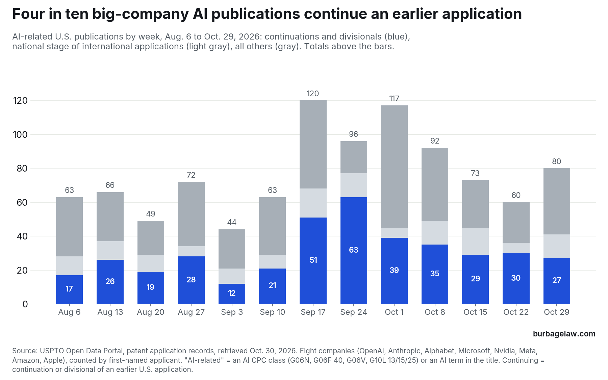
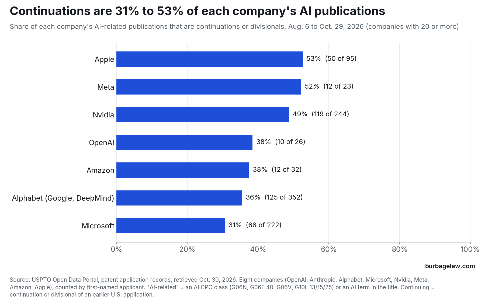

Data · Who is filing on what, edition 4
Four in ten big-company AI patent publications continue earlier applications, and most of their parents are already patents
AI-related U.S. applications that eight large AI companies published on October 29, 2026, and in the 13 weekly publication dates from August 6 to October 29, 2026, sorted by whether each continues an earlier U.S. application.
Listen · Thinking Makes It So, 2026-10-30 · 7 min
All episodes · Subscribe: Apple Podcasts · Spotify
The short version
On Thursday, October 29, 2026, the eight companies tracked in this series published 80 AI-related U.S. applications. Alphabet had 29, Microsoft 25, Nvidia 18, Apple 5, OpenAI 2 and Meta 1. Amazon and Anthropic had none.
Only 39 of the 80 were first publications of a new U.S. filing. Another 27 were continuations or divisionals of earlier U.S. applications, and 25 of those 27 continue an application that has since issued as a patent. The remaining 14 entered the United States from international applications under the Patent Cooperation Treaty. The oldest continuation published this week traces to a provisional application filed in January 2015.
This week was not unusual. Over the last 13 publication weeks, 397 of the eight companies’ 995 AI-related publications, or 40%, were continuations or divisionals. For 371 of the 397, the parent has since issued as a patent.


What published this week
The oldest family is Alphabet’s. Its application titled “Image processing using normalization layers” (US 2026/0340387) is the sixth U.S. nonprovisional application in a chain that began with a provisional application filed January 28, 2015. Each of the five earlier applications has issued as a patent, starting with U.S. Patent 10,417,562. Its first-named inventor is Sergey Ioffe, and its text describes batch normalization layers. Alphabet’s “Neural network compute tile” (US 2026/0339665) follows the same pattern from an October 2016 filing, with five earlier applications that are now patents.
The newer material sits in the first publications. Of the 39, 38 have an earliest priority date in April 2025, as expected: 35 U.S.C. 122(b) requires publication promptly after 18 months from the earliest filing date claimed. They include two OpenAI applications on safety checks, one for the output of a generative response engine (US 2026/0340286) and one for audio output (US 2026/0341299), and two on software agents: Alphabet’s “Selection of agentic models for task completion based on model interconnectivity” (US 2026/0340490) and Microsoft’s “Vector communications between artificial intelligent agents” (US 2026/0339761).
Who relies on continuations most
Every company in the series files them. Over the 13 weeks, continuations and divisionals were 53% of Apple’s AI-related publications (50 of 95) and 49% of Nvidia’s (119 of 244), against 36% of Alphabet’s and 31% of Microsoft’s. The continuation counts for Meta (12), OpenAI (10) and Amazon (12) are too small to read as a pattern. Continuations are not new for these companies: on the matching Thursday of 2025, October 30, 18 of their 51 AI-related publications were continuations, all of them of applications that later issued. One week is too small a sample to compare rates.


The week continuations reached 66%
The weekly share ran from 27% to 66%. The high was September 24, when 63 of 96 AI-related publications were continuations. We checked that each application number appears once and that each of the 63 records names an earlier U.S. application it continues or divides from. Two of this week’s continuations were also opened in a second source, Justia, and match the USPTO records, down to the chain of earlier applications.
Upon review, I conclude that the spike has two causes, and both come from the publication clock. A continuation claims a priority date that is usually years old, so the USPTO publishes it soon after it is filed: the median continuation in these 13 weeks published 4.4 months after filing, against 18 months for first publications. Continuations filed in the same month therefore publish together. Of the 84 continuations in the window that were filed in May 2026, 77 published on September 17 or September 24; 37 of them were among the 63. The same week had only 19 first publications, the fewest of the 13 weeks, against a weekly median of 34. The records do not show why the companies filed so many continuations in the spring of 2026.
What it means for in-house counsel
A weekly count of publications overstates how much new technology these companies are disclosing. In this window, fewer than half of their AI-related publications were first publications of new U.S. filings. In diligence on a target’s AI portfolio, I would not read a rising publication count as a rising rate of invention until its continuations are separated out.
When an examiner cites a recently published application against your claims, check its chain of earlier applications before arguing about dates. Four in ten of these companies’ AI publications continue an earlier application, and one published this week can carry an effective filing date in 2015, and it is prior art as of that date for what the earlier application describes (35 U.S.C. 102(a)(2) and 102(d)).
The figures also show how the largest filers use continuations. A continuation must be filed while its parent is still pending (35 U.S.C. 120), and these companies keep families open that way for a decade, which lets them present new claims on a 2015 or 2016 priority date, aimed at products that did not exist when they first filed, so long as the original text supports those claims.
Method
Data: USPTO Open Data Portal, patent application records, retrieved October 30, 2026. The 13 weekly publication dates are August 6 to October 29, 2026; the 2025 comparison is the single publication date of October 30, 2025. October 29, 2026 was fully loaded when retrieved: 10,081 utility applications carry that publication date.
Companies are counted by first-named applicant only, with name variants combined: OpenAI, Anthropic, Alphabet (Google LLC, GDM Holding LLC, DeepMind Technologies Limited), Microsoft, Nvidia, Meta, Amazon and Apple. A search for misspelled and variant names found “Apple, Inc.”, “Apple Inc”, “Google, LLC”, “GOOGLE, LLC”, “GOOGLE LLC.”, “Microsoft Technology Licensing, LLC.” and “MICROSOFT TECHNOLOGY LICENSING, LLC.” Two of those records are AI-related (a “Google, LLC” application published August 20 and a “MICROSOFT TECHNOLOGY LICENSING, LLC.” application published October 1), and both are counted in the 995. Each application is counted once.
A publication counts as AI-related if it carries a CPC code in G06N, G06F 40, G06V, or G10L 13, 15 or 25, or if its title uses an AI term such as “machine learning,” “neural network,” “language model” or “generative.” As in earlier editions, G06N includes G06N 10 (quantum computing). Thirty-four of the 995 publications qualify only through G06N 10; without them, 379 of 961, or 39%, are continuations or divisionals.
A continuation or divisional is a record whose continuity data names an earlier U.S. application it continues or divides from (the 397 include one continuation-in-part, an Nvidia application published September 17, counted with them). A national stage application is one that entered the United States from an international application under the Patent Cooperation Treaty. All others are counted as first publications, including those that claim a provisional application. A parent has issued if the record of the continuation lists a patent number for it as of retrieval. Because a continuation must be filed while its parent is pending, those patents issued after the continuation was filed. The earliest priority date is the earliest of the U.S. filing date and the filing dates of every provisional, parent, international or foreign application the record claims.
Months from filing to publication are computed from the U.S. filing date of each application to its publication date.
Counts under about 20, such as the continuation counts for Meta, OpenAI and Amazon, swing widely from period to period and are not a trend. The 2025 comparison is a single week and is not a rate.
Source: USPTO Open Data Portal · USPTO, US 2026/0340387 (Alphabet, Image processing using normalization layers) · USPTO, US 2026/0339665 (Alphabet, Neural network compute tile) · USPTO, US 2026/0340286 (OpenAI, Safety engine processing of generative response engine output) · USPTO, US 2026/0341299 (OpenAI, Safety classifiers for audio output) · USPTO, US 2026/0340490 (Alphabet, Selection of agentic models for task completion based on model interconnectivity) · USPTO, US 2026/0339761 (Microsoft, Vector communications between artificial intelligent agents) · Justia Patents, US 2026/0340387 · Justia Patents, US 2026/0339665
Data and citation
You may quote, chart and republish these figures with a citation to this page. Suggested citation:
Jon Burbage, Four in ten big-company AI patent publications continue earlier applications, and most of their parents are already patents, Burbage Law: Who Is Filing on What, ed. 4 (Oct. 30, 2026), https://burbagelaw.com/data/2026-10-30-big-ai-filers-publish-continuations.html
← All data editions · Developments
Burbage Law is the practice of Jon Burbage, a registered patent attorney. 342 United States patents have issued from applications he wrote; the full list is on the Patents page. More about Jon Burbage.
These figures are computed from public USPTO records as described above. They are general information, not legal advice, and do not create an attorney-client relationship.